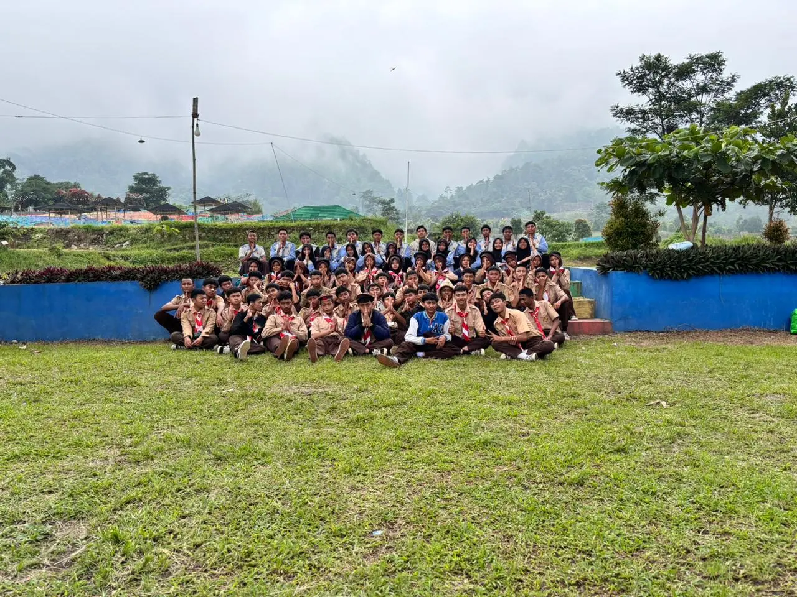
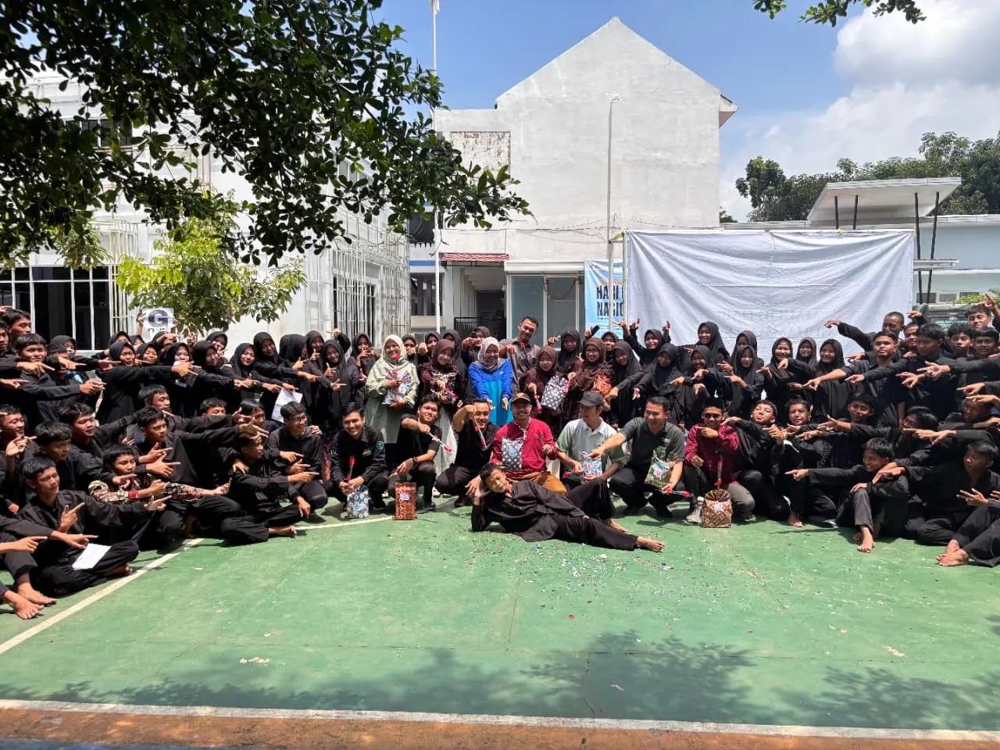
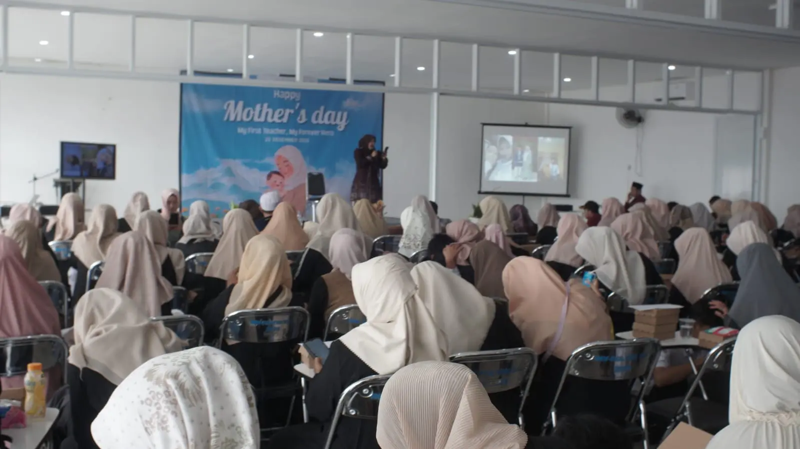

OSIS SMK IBNU KHALDUN
Mewujudkan Generasi Emas yang Kreatif, Inovatif, dan Berkarakter Pancasila.
Lihat Program KamiVisi OSIS
Mewujudkan OSIS yang aktif, kreatif, dekat dengan siswa, dan inspiratif sebagai wadah pengembangan potensi serta aspirasi siswa dalam menciptakan lingkungan sekolah yang unggul, disiplin, menyenangkan, dan berkarakter.
Misi Strategis
Konektivitas Solid
Menjadi penghubung yang solid antara siswa, guru, dan pihak sekolah untuk komunikasi yang transparan.
Inovasi Kegiatan
Mengadakan kegiatan seru dan bermanfaat guna mengembangkan minat bakat akademik maupun non-akademik.
Ruang Aspirasi
Menyediakan ruang bagi siswa untuk menyampaikan ide dan berpartisipasi aktif dalam kehidupan sekolah.
Pembinaan Karakter
Menumbuhkan sikap tanggung jawab, disiplin, dan kerja sama melalui pembinaan kepemimpinan.
Lingkungan Sekolah
Mendorong terciptanya suasana sekolah yang nyaman dan mendukung prestasi secara menyeluruh.
Dari Kepala Sekolah
Assalamu'alaikum Warahmatullahi Wabarakatuh. Saya sangat bangga dengan semangat dan inisiatif yang ditunjukkan oleh para pengurus OSIS. Teruslah berkarya, jadilah teladan, dan bawa nama baik sekolah kita ke tingkat yang lebih tinggi.
Bu. Ima Fatmawati, S.Pd., Gr.
Kepala Sekolah SMK Ibnu KhaldunDari Pembina OSIS
Menjadi pengurus OSIS adalah kesempatan emas untuk belajar kepemimpinan dan tanggung jawab. Manfaatkan platform ini untuk menyebarkan informasi positif dan menginspirasi seluruh siswa. Jangan pernah lelah untuk berinovasi.
Pak Dion Sudibyo, S.Pd.
Pembina OSIS SMK Ibnu KhaldunBidang OSIS
Pilar penggerak kreativitas dan aspirasi siswa

Belajar dan Bekerja Bersama dalam Tim untuk menyukseskan Program Kerja
Dalam OSIS, kita belajar dan bekerja bersama dalam setiap Program Kerja yang telah direncanakan. Mulai dari perencanaan, pembiayaan, pembentukan panitia hingga saat kegiatan berlangsung.
Semua juga tidak lepas di bawah bimbingan para guru yang berperan sebagai pendamping pengurus OSIS, memastikan setiap langkah yang kita ambil selaras dengan visi sekolah.
School Event

KEPAKS
Kemah Penguatan Karakter Siswa (KEPAKS) adalah wadah pembentukan disiplin, kemandirian, dan jiwa kepemimpinan siswa melalui kegiatan alam terbuka yang edukatif.

Hari Guru
Momen apresiasi setinggi-tingginya bagi para pahlawan tanpa tanda jasa. Dirayakan dengan persembahan seni dan kejutan manis dari siswa untuk guru tercinta.

Hari Ibu
Peringatan penuh kasih sayang untuk menghormati peran ibu. Kegiatan ini mengajak siswa merenungkan jasa orang tua melalui doa dan bakti nyata.